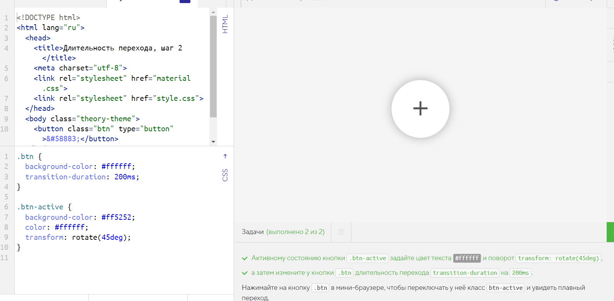
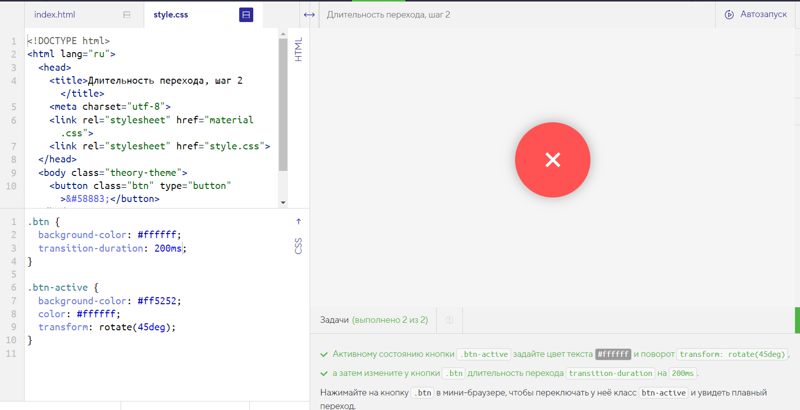

Длительность перехода, шаг 2
Плавные переходы и анимацию можно применить только к некоторым CSS-свойствам. В основном это свойства, изменяющие размер, цвет, позицию элементов. В статье на MDN приведён перечень анимируемых свойств и характер их анимирования.
Если задана только длительность перехода transition-duration, то по умолчанию плавное изменение затрагивает все свойства элемента и для всех свойств происходит одновременно. Давайте попробуем задать кнопке ещё несколько свойств и посмотрим, как они будут изменяться.
В этом и следующих примерах используются CSS-трансформации, которые подробно разбираются в части «Двумерные трансформации».
Задачи
-
Активному состоянию кнопки .btn-active задайте цвет текста #ffffff и поворот transform: rotate(45deg), а затем измените у кнопки .btn длительность перехода transition-duration на 200ms.
-
Нажимайте на кнопку .btn в мини-браузере, чтобы переключать у неё класс btn-active и увидеть плавный переход.
Было
Надо
